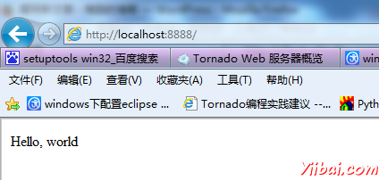

win7下配置python2.7+tornado3开发环境
做python的朋友大都在linux下进行开发,由于长期习惯在windows下开发代码，尝试在window7下配置python2.7+tornado3.3开发环境，必然的中间遇到各种报错，但是最终还是配置成功了。
开始！
前提: python2.7的安装比较简单,且网上也有大量文章可以找，这里就不再累述，直接进入tornado3.3安装.
这里使用python2.7，并装在 D:\Python27
1.tornado下载
直接用Git工具从Github上下载tornado项目
如图，我遇到个编译报错， vcvarsall.bat这个没找到，网上查了原因是 python在注册表中寻找到vs的目录，再去在vs目录下找vcvarsall.bat。但是问题我机器的vs版本比较低,python里面默认是vc9.0也就是vs2008所以它在注册表里面找不到键值,返回None,可以自己取安装一个vs2008以上版本,这个问题先忽略，因为不会影响后面的使用(我们不需要编译安装)
install执行完后会在pyhon的安装路径的\Lib\site-packages下多一个tornado文件夹，tornado的初步安装但是还未完成
通过网上文章研究到这来，以为就完成了，所以开始跑 经典 "helloworld.py"发现报错....偶的心拔凉拔凉的
到backports.ssl_match_hostname-3.4.0.2路径下执行
|
1
|
python steup install
|
最后再次运行 helloworld.py，这样就成功了成功了

标签： win7 下 配置 python2.7+tornado3 开
本站文章除注明转载外，均为本站原创或编译
欢迎任何形式的转载，但请务必注明出处，尊重他人劳动共创优秀实例教程
转载请注明：文章转载自： 易百教程 [ http:/www.yiibai.com ]
本文标题： win7下配置python2.7+tornado3开发环境
本文地址： http://www.yiibai.com/python/win7-python-tornado.html
欢迎任何形式的转载，但请务必注明出处，尊重他人劳动共创优秀实例教程
转载请注明：文章转载自： 易百教程 [ http:/www.yiibai.com ]
本文标题： win7下配置python2.7+tornado3开发环境
本文地址： http://www.yiibai.com/python/win7-python-tornado.html

{kind=link}
{kind=link}
{kind=link}